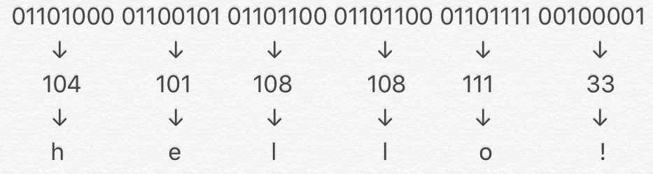
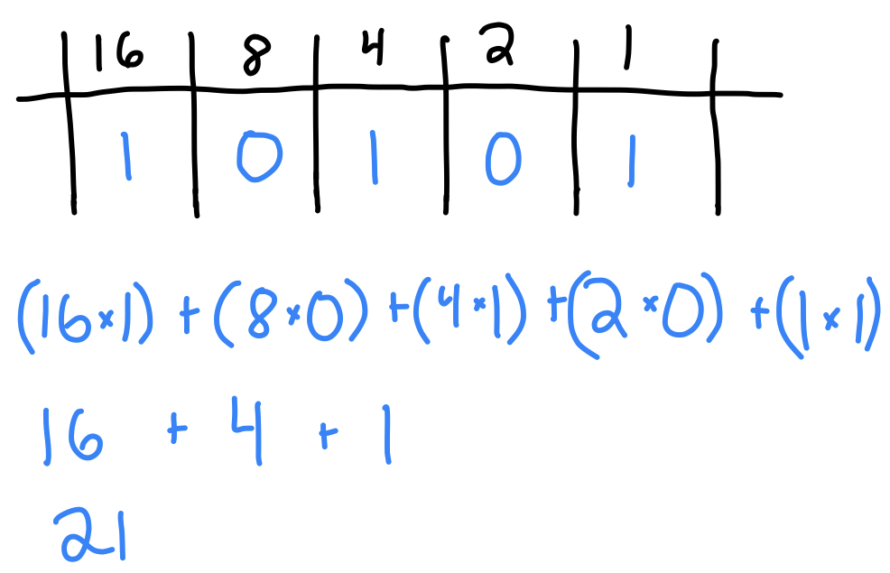
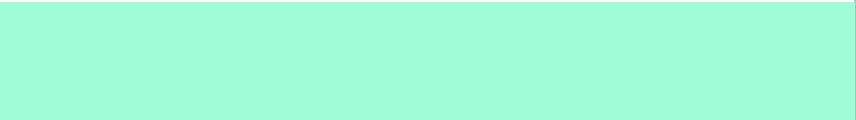
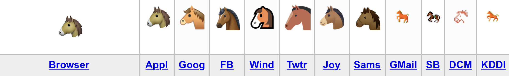

How Computers Communicate
Computers communicate and store information by using a system called binary. Binary is a way of expressing numbers as a sequence of ones and zeros. Why binary? Because there are two states an electronic device can be in: on and off. The ones represent the ‘on’ state, and zeros represent the ‘off’ state.
There are different codes using binary.
One of them is ASCII. ASCII is a code with 8 bits, or digits. The binary code is translated to numbers, and those numbers are translated to characters. For example, ‘hello!’ in ASCII looks like this:
Binary has place values like numbers we use. Instead of ones, tens, and hundreds, and other powers of ten, binary uses ones, twos, fours, and eights, and other powers of 2. For example, the binary number 10101 is the number 21.
That is how computers translate characters. But what about colors?
There is another code that uses binary called RGB. Just like characters on the keyboard, colors are displayed by their own special code. RGB codes are sets of 3 numbers. The numbers represent the amount of red, green, and blue in each color. Here are 3 different colors followed by their RGB codes.
159, 121, 238
127, 255, 212
255, 228, 181
Emojis use a system called Unicode. Unicode uses 7 characters. Here are some examples:
😀 U+1F600
🤯 U+1F92F
🍪 U+1F36A
Different apps interpret these codes in different ways. For example, look how different the horse emoji looks from these different apps:
But some apps don’t have an emoji for certain things, for example, the zebra:
Bibliography
- “CS50 2019 - Lecture 0 - Computational Thinking, Scratch,” accessed May 1, 2020, https://www.youtube.com/watch?v=jjqgP9dpD1k&app=desktop
- “RGB-color selection table,” accessed May 2, 2020, http://www.techfak.uni-bielefeld.de/~walter/misc/colorRGB.html